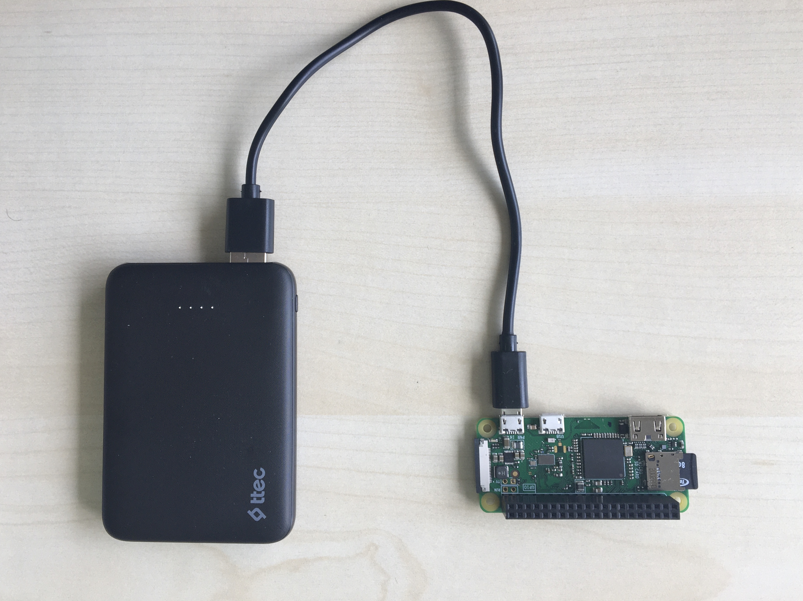
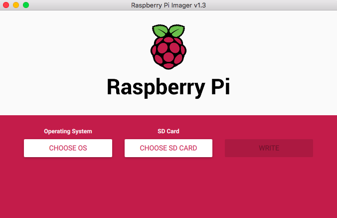
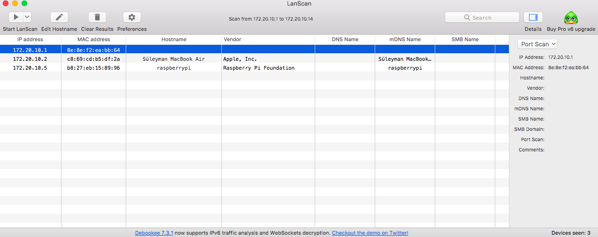
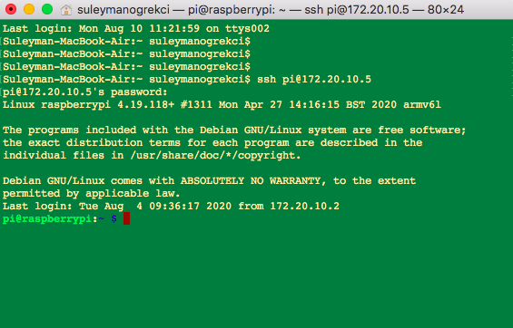

Raspberry Pi Kurulumu
Kayıt Tarihi:
Bu yazımda Raspberry Pi cihazınızı ekran, klavye ve fare gibi çevre elemanları olmadan nasıl kurup uzaktan bağlanarak kullanabileceğinizi açıklayacağım. Bu cihazlar ucuz ve çok küçük bir bilgisayar gibi kullanılabilir, kendi web sunucunuzu, mail sunucunuzu ve bunun gibi bir çok şeyi tasarlayıp kullanabilirsiniz.
Anahtar Kelimeler: Raspberry Pi · Raspberry Pi OS · Raspberry Pi Zero W · ssh · wpa_supplicantRaspberry Pi isimli mikro kontrol platformları hem kabiliyetleri hem de ekonomik fiyatları nedeniyle günümüzde oldukça popüler. Bunlar özetle küçük bir ana kart (board) üzerine yerleştirilmiş işlemci, bellek gibi temel birimlerin oluşturduğu basit bir bilgisayar olarak görülebilir. Kart üzerindeki USB, HDMI gibi girişleri kullanılarak bir Raspberry Pi kartına ekran, klavye, fare, kamera gibi çevre birimlerini bağlayarak bir bilgisayar oluşturabilirsiniz. Bunlar sabit disk olarak kart üzerindeki girişe yerleştirdiğiniz micro SD hafıza kartını kullanıyorlar, dolayısıyla işletim sistemini bir hafıza kartına yükleyip buradan boot edeceksiniz (bunu yapmak için Raspberry Pi şirketinin araçları var, yani bu aslında çok kolay). Raspberry Pi şirketinin resmi olarak geliştirdiği Debian tabanlı olan ve Raspberry Pi OS adında bir işletim sistemi var, bunun dışında istediğiniz Linux dağıtımını da kurabilirsiniz. Bunların çeşitli modelleri var ve her modelin donanım özellikleri farklı, günümüzde en son çıkan model Raspberry Pi 4 modelidir ve bunların en güçlüsü dört çekirdekli 1.5 Ghz işlemci ve 8 Gb DDR4 bellek içeriyor. Ben bu yazımda Raspberry Pi Zero W modelini kullanacağım ama anlatacaklarım diğer modeller için de geçerli, bu modelde (neredeyse tüm diğer modellerde) Wifi bağlantısı var, bu yolla Raspberry Pi'mize kablosuz bağlanacağız. Raspberry Pi kartımıza güç vermek için firmanın ürettiği adaptörleri kullanabilirsiniz, bunun dışında şu sayfada belirtilen değerlere uygun herhangi bir adaptör veya güç kaynağı da kullanılabilir. Ben Raspberry Pi Zero W kartını cep telefonumun 5V 1A adaptörü ile, bir powerbank ile, bilgisayarımın USB çıkışı ile hatta AA kalem pillerle sorunsuz şekilde çalıştırdım. 
Elinize Raspberry Pi Zero W kartını aldınız ve ekran, klavye gibi hiç bir çevre birimi kullanmadan çalıştırmak istiyorsunuz, bunun için öncelikle hafıza kartınıza bir işletim sistemi yüklemelisiniz. Bunu yapmak için şu sayfadan Raspberry Pi Imager yazılımını indirin, bunu çalıştırıp hafiza kartınızı ve yüklemek istediğiniz işletim sistemini seçerseniz yazılım seçtiğiniz işletim sistemini indirip hafıza kartınıza boot olabilecek şekilde yükleyecektir. Benim kullandığım Raspberry Pi Zero W modelinde 1 Ghz işlemci ve 512 Mb Ram bulunduğundan en hafif işletim sistemi olan Raspberry Pi OS Lite kurdum, bu işletim sisteminde grafik arayüz yok. 
Hafıza kartınızı bilgisayardan çıkarmadan önce yapmamız gereken bazı ayarlar var. Öncelikle Raspberry Pi'nize kablosuz bağlanmak için Wifi ayarlarını yapmamız gerekiyor. Hafıza kartınızdaki boot klasörüne girip bir wpa_supplicant.conf dosyası oluşturun, bunun içine bağlanmak istediğiniz Wifi ağlarını tanımlayacaksınız. Bu dosyayı şu sayfadaki talimatlara uygun olarak aşağıdaki gibi hazırlamalısınız, buarda ben evdeki Wifi ağı ile cep telefonumun Hotspot Wifi ağının isimlerini ve şifrelerini girdim.
ctrl_interface=DIR=/var/run/wpa_supplicant GROUP=netdev
update_config=1
country=TR
network={
ssid="ev-agi"
psk="123456789"
priority=1
id_str="home"
}
network={
ssid="iphone-suleyman"
psk="123456789"
priority=2
id_str="mobile"
}
Daha sonra yine boot klasörü içine ssh isimli uzantısız ve içi boş bir dosya oluşturup kaydedin, bu sayede Raspberry Pi'nizin komut işlemcisine (terminal) kendi bilgisayarınızdan erişebileceksiniz.
Şimdi hafıza kartınızı Raspberry Pi'nize takıp kartınıza güç verin, üzerindeki led lamba yanıp sönmeye başlayacak ve kısa sürede Raspberry Pi cihazınız çalışıp belirttiğiniz Wifi ağına bağlanacaktır. Bir şekilde cihaza atanan ip adresini bulmanız gerekiyor, kullandığınız bilgisayar da aynı ağa bağlansın. Ben LanScan isimli bir uygulama kullanıyorum, bu uygulama bilgisayarın bağlı olduğu ağdaki tüm cihazların ip adreslerini gösteriyor. 
Şimdi bilgisayarınızın terminalinden ssh pi@123.45.67.89 yazın (burada ip adresinizi kendi Raspberry Pi ip adresi ile değiştirin), şifre istenince raspberry yazın (işletim sisteminizde varsayılan kullanıcı adı ve şifre bu şekildedir). Artık Raspberry Pi cihazınıza bağlanmış olmalısınız, istediğiniz gibi kullanabilirsiniz. Mesela ben şu sayfadaki adımları takip ederek bir web server kurup wordpress sitesi kurdum, daha sonra postfix kullanarak bir de smtp mail server kurdum.

Buradaki işlemleri takip ederek sadece aynı ağdayken Raspberry Pi'nize bağlanabilirsiniz, uzak ağdan bağlantı sağlamak için sabit ip adresiniz veya dynamicDNS ayarınız olmalı, ben ücretsiz olan noip servisini kullanıyorum. Ayrıca ben şu blog yazımda anlattığım gibi ücretsiz Wolfram Mathematica yükleyip uzaktan bağlanarak hesaplamalar yapıyorum.
Bedava Lisanslı Mathematica
Python'da OpenCV ile Yüz Tanıma